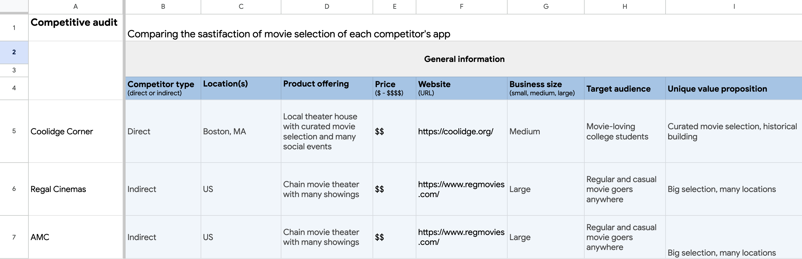
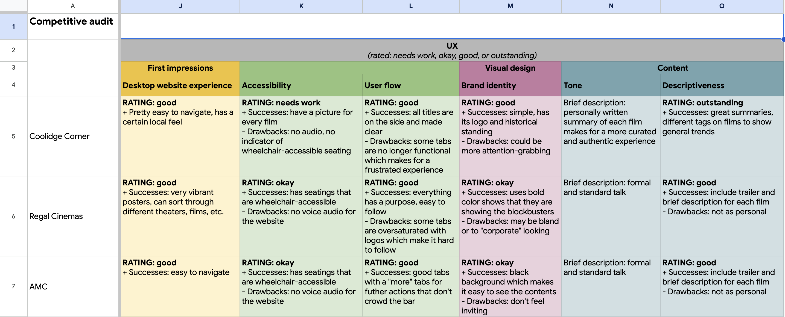
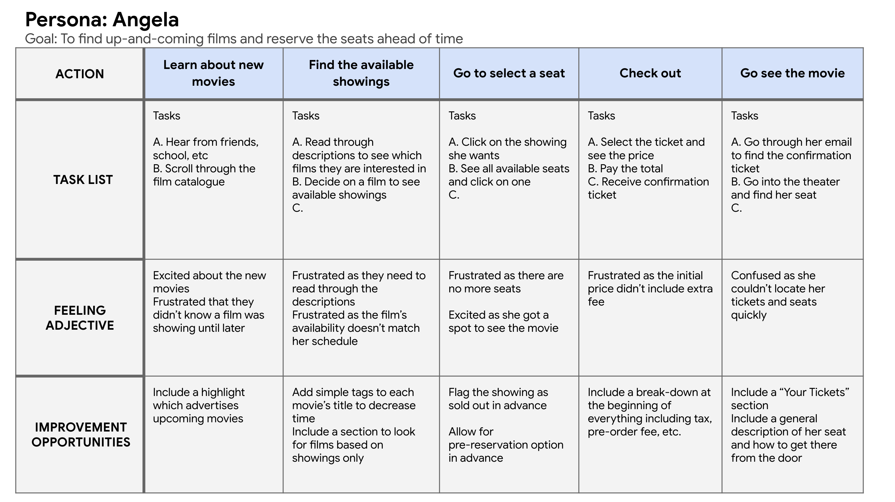
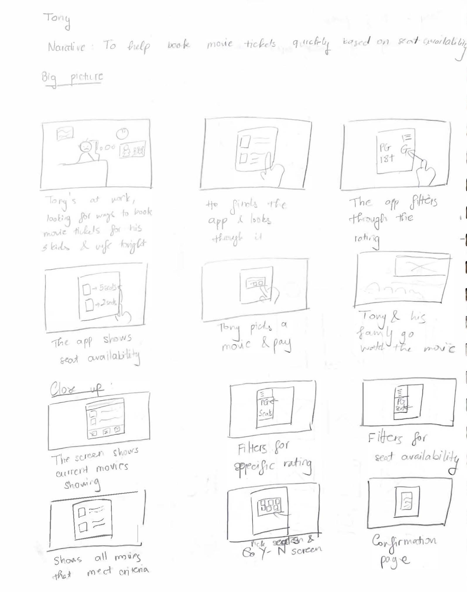
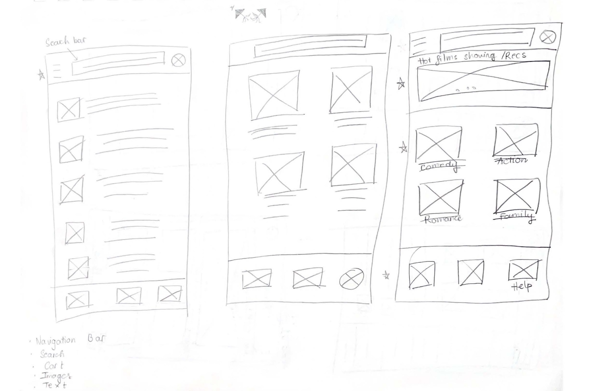
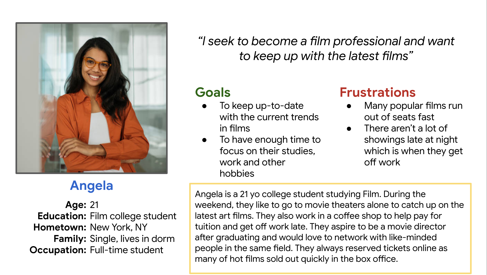
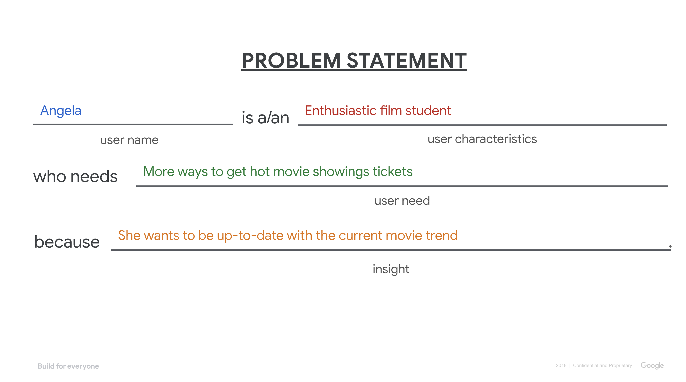
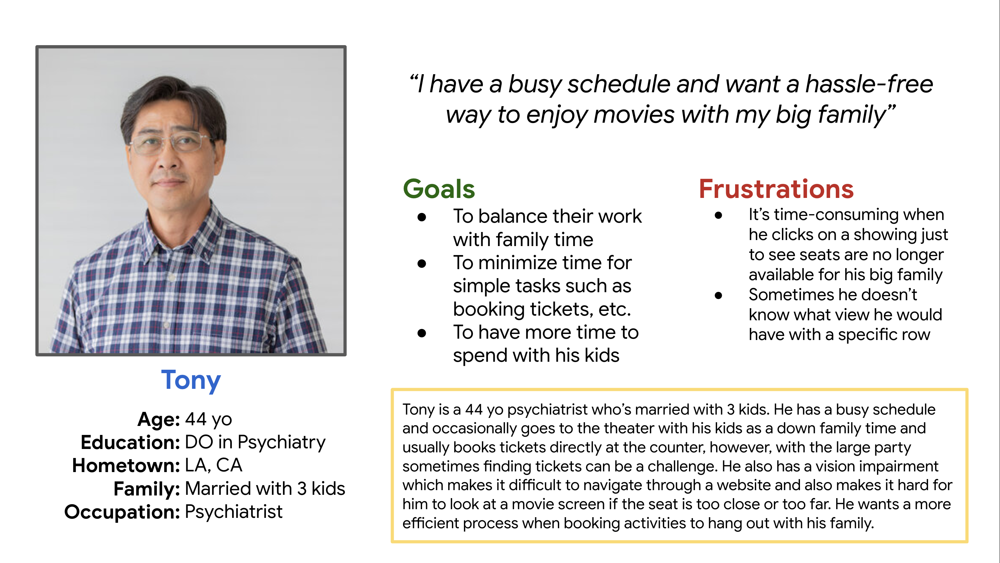
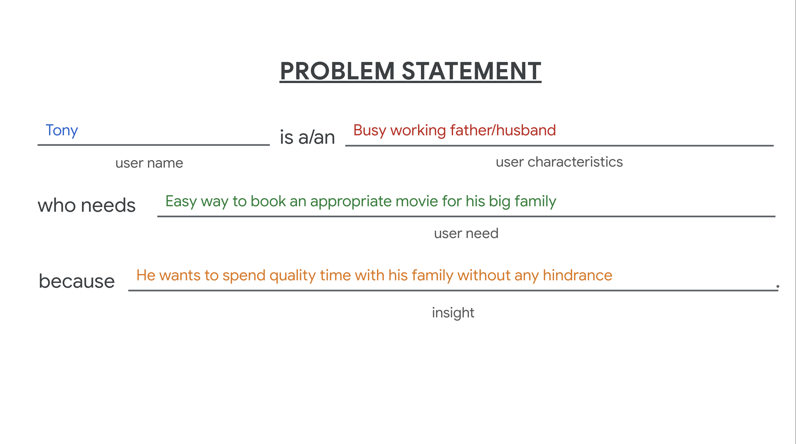

Making a Movie Ticket Reservation App
Overview
This design project creates a prototype for an app that would allow for easy movie ticket booking. The design specifically takes into account the different needs users may have while doing a basic task such as purchasing a movie ticket .
Market Research
 Empathize Process
The process starts with empathizing with the users, creating different personas and their journeys to better understand their pain points.
- Personas & Problem Statements
- User Journey 
- Storyboarding User Flow 
- Paper Prototype 
- © Untitled
- Design: HTML5 UP




Ideating the Design
Based on the user research and consideration for usability, a paper wireframe was created. After refining through several versions, the best qualities are transfered onto a digital wireframe.